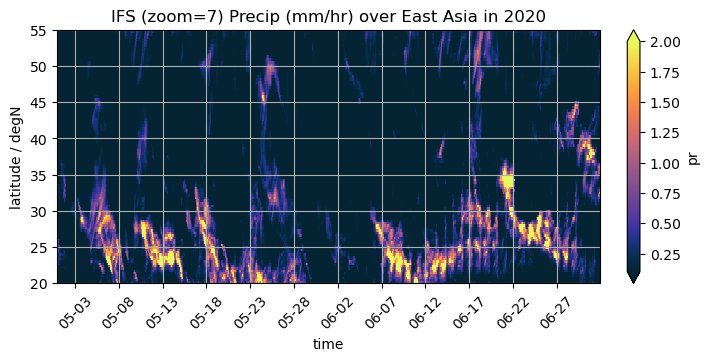
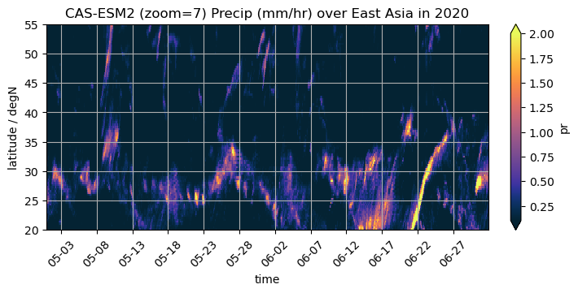
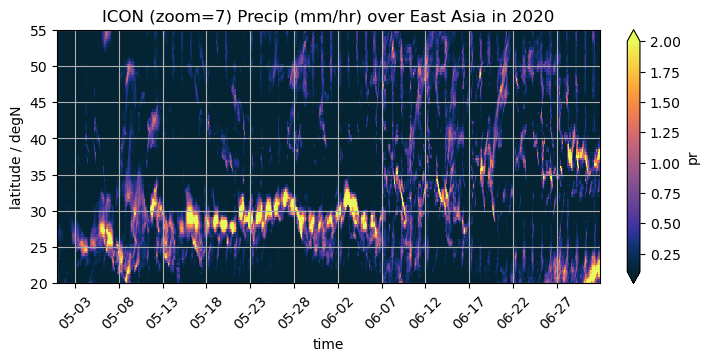
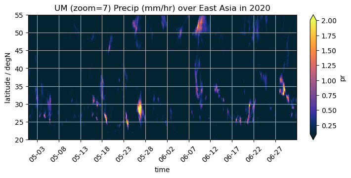
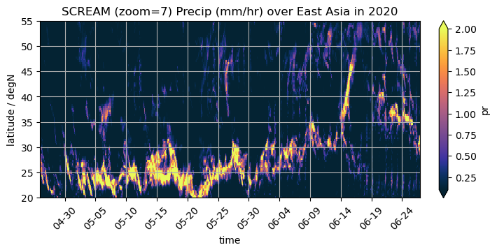
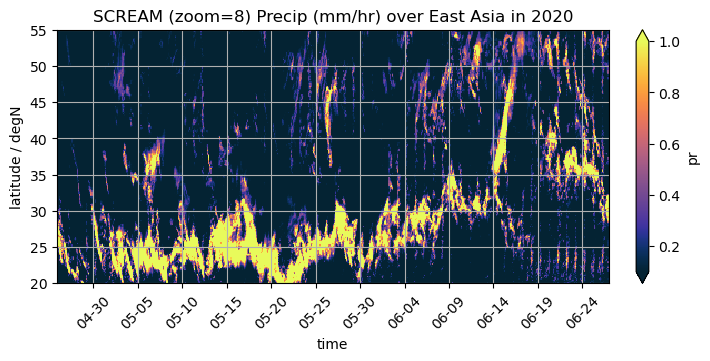
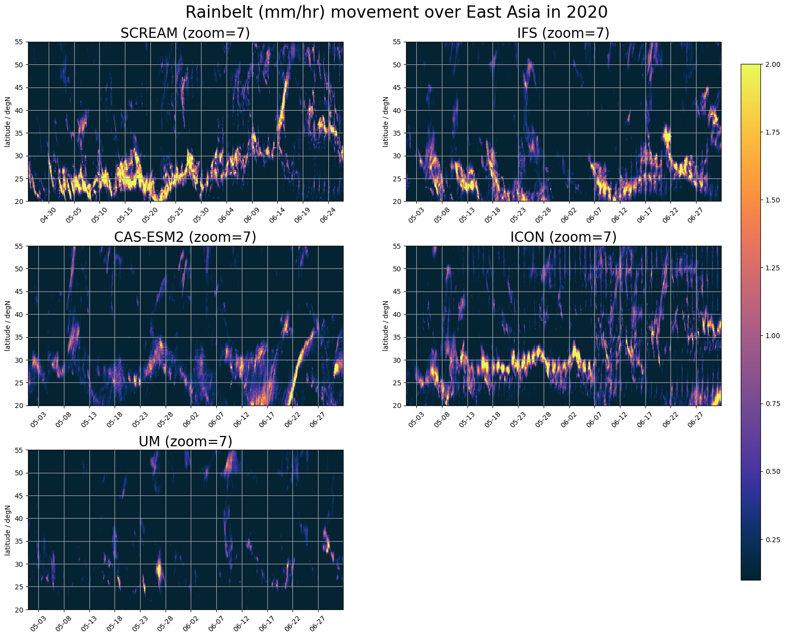

import intake
from easygems import healpix as egh
import healpy as hp
import matplotlib.pyplot as plt
import warnings
warnings.filterwarnings("ignore", category=FutureWarning)
current_location = "NCAR" #"online"
cat = intake.open_catalog("https://digital-earths-global-hackathon.github.io/catalog/catalog.yaml")[current_location]
from easygems.healpix import attach_coords
scream = cat['scream2D_hrly'](zoom = 7).to_dask().pipe(attach_coords)
domain = "East Asia"
da = (
scream['pr']
.sel(time=slice("2020-05-01", "2020-07-01")) #06-01 to 08-31
.where((scream["lon"] > 105) & (scream["lon"] < 122.0) & (scream["lat"] > 20.) & (scream["lat"] < 55.), drop=True)
.resample(time="3H") #'1D'
.mean(dim="time")
.groupby("lat")
.mean()
).compute()*36e5
scream
<xarray.Dataset> Size: 15GB
Dimensions: (time: 9457, cell: 196608)
Coordinates:
* time (time) object 76kB 2019-08-01 00:00:00 ... 2020-09-01 00:00:00
lat (cell) float64 2MB 0.2984 0.5968 0.5968 ... -0.5968 -0.2984
lon (cell) float64 2MB 45.0 45.35 44.65 45.0 ... 315.4 314.6 315.0
crs int64 8B 0
* cell (cell) int64 2MB 0 1 2 3 4 ... 196603 196604 196605 196606 196607
Data variables:
pr (time, cell) float32 7GB dask.array<chunksize=(24, 196608), meta=np.ndarray>
rlut (time, cell) float32 7GB dask.array<chunksize=(24, 196608), meta=np.ndarray>
ELEV (cell) float32 786kB dask.array<chunksize=(4096,), meta=np.ndarray>
LANDFRAC (cell) float32 786kB dask.array<chunksize=(4096,), meta=np.ndarray>
Attributes: (12/22)
Conventions: CF-1.8
atm_initial_conditions_file: /lustre/orion/cli115/world-shared/e3sm/inpu...
averaging_frequency: 1
averaging_frequency_units: nhours
averaging_type: INSTANT
case: cess-control.ne1024pg2_ne1024pg2.F2010-SCRE...
... ...
product: model-output
realm: atmos
run_t0: 2019-08-01-00000
source: E3SM Atmosphere Model (EAMxx)
topography_file: /lustre/orion/cli115/world-shared/e3sm/inpu...
username: noelIFS
ifs = cat['ifs_tco3999-ng5_rcbmf_cf'](time='PT1H', zoom = 7).to_dask().pipe(attach_coords)
ifs['pr']
<xarray.DataArray 'pr' (time: 10201, cell: 196608)> Size: 8GB
dask.array<open_dataset-pr, shape=(10201, 196608), dtype=float32, chunksize=(1129, 24576), chunktype=numpy.ndarray>
Coordinates:
lat (cell) float64 2MB 0.2984 0.5968 0.5968 ... -0.5968 -0.5968 -0.2984
lon (cell) float64 2MB 45.0 45.35 44.65 45.0 ... 315.4 314.6 315.0
* time (time) datetime64[ns] 82kB 2020-01-01 ... 2021-03-01
crs int64 8B 0
* cell (cell) int64 2MB 0 1 2 3 4 5 ... 196603 196604 196605 196606 196607
Attributes: (12/14)
paramId: 228
dataType: fc
numberOfPoints: 196608
typeOfLevel: surface
stepUnits: 1
stepType: accum
... ...
units: kg m-2 s-1
name: Total precipitation
cfVarName: tp
missingValue: 9999
NV: 0
gridDefinitionDescription: 150da_ifs = (
ifs['pr']
.sel(time=slice("2020-05-01", "2020-07-01")) #06-01 to 08-31
.where((ifs["lon"] > 105) & (ifs["lon"] < 122.0) & (ifs["lat"] > 20.) & (ifs["lat"] < 55.), drop=True)
.resample(time="3H") #'1D'
.mean(dim="time")
.groupby("lat")
.mean()
).compute()*36e2
import nc_time_axis
import cmocean
import matplotlib.dates as mdates
fig, ax = plt.subplots(figsize=(7, 3.5), constrained_layout=True)
da_ifs.plot(x="time", ax=ax, ylim=(20.,55.), vmin=0.1, vmax=2., cmap=cmocean.cm.thermal)#levels=[.1,.3,.5,1.,1.2,1.5,2.]**plot_properties[var], add_colorbar=False)
ax.set_title(f"IFS (zoom=7) Precip (mm/hr) over {domain} in 2020")
ax.set_ylabel("latitude / degN")
ax.grid(True)
ax.xaxis.set_major_locator(mdates.DayLocator(interval=5))
ax.xaxis.set_major_formatter(mdates.DateFormatter('%m-%d'))
ax.tick_params(axis='x', labelrotation=45)

CASESM2
cas = cat['casesm2_10km_nocumulus'](time='PT1H', zoom = 7).to_dask().pipe(attach_coords)
cas
<xarray.Dataset> Size: 55GB
Dimensions: (cell: 196608, time: 8760)
Coordinates:
* time (time) datetime64[ns] 70kB 2020-03-01T01:00:00 ... 2021-03-01
crs int64 8B 0
* cell (cell) int64 2MB 0 1 2 3 4 5 ... 196603 196604 196605 196606 196607
lat (cell) float64 2MB 0.2984 0.5968 0.5968 ... -0.5968 -0.5968 -0.2984
lon (cell) float64 2MB 45.0 45.35 44.65 45.0 ... 315.4 314.6 315.0
Data variables:
orog (cell) float32 786kB ...
pr (time, cell) float32 7GB ...
psl (time, cell) float32 7GB ...
rlut (time, cell) float32 7GB ...
rsut (time, cell) float32 7GB ...
sftgif (cell) float32 786kB ...
sftlf (cell) float32 786kB ...
ts (time, cell) float32 7GB ...
u10 (time, cell) float32 7GB ...
uas (time, cell) float32 7GB ...
vas (time, cell) float32 7GB ...
Attributes: (12/13)
Conventions: CF-1.0
NCO: netCDF Operators version 5.3.2 (Homepage = ht...
Version: $Name$
case: AMIP_C6NCH_fd01_no_cumulus
history: Fri Feb 21 12:18:22 2025: ncks -m -A -C -v PH...
history_of_appended_files: Fri Feb 21 12:18:22 2025: Appended file IAP_t...
... ...
initial_file: /data/feikc/hindcastdata/atm_ini_0.1d_L35/IAP...
logname: zhangh
revision_Id: $Id$
source: CAM
title: UNSET
topography_file: /data2/share/casesm/czy/plot/20250216/cube_to...da_cas = (
cas['pr']
.sel(time=slice("2020-05-01", "2020-07-01")) #06-01 to 08-31
.where((cas["lon"] > 105) & (cas["lon"] < 122.0) & (cas["lat"] > 20.) & (cas["lat"] < 55.), drop=True)
.resample(time="3H") #'1D'
.mean(dim="time")
.groupby("lat")
.mean()
).compute()*36e2
import nc_time_axis
import cmocean
import matplotlib.dates as mdates
fig, ax = plt.subplots(figsize=(7, 3.5), constrained_layout=True)
da_cas.plot(x="time", ax=ax, ylim=(20.,55.), vmin=0.1, vmax=2., cmap=cmocean.cm.thermal)#levels=[.1,.3,.5,1.,1.2,1.5,2.]**plot_properties[var], add_colorbar=False)
ax.set_title(f"CAS-ESM2 (zoom=7) Precip (mm/hr) over {domain} in 2020")
ax.set_ylabel("latitude / degN")
ax.grid(True)
ax.xaxis.set_major_locator(mdates.DayLocator(interval=5))
ax.xaxis.set_major_formatter(mdates.DateFormatter('%m-%d'))
ax.tick_params(axis='x', labelrotation=45)

ICON
icon = cat['icon_d3hp003'](time_method='inst', time='PT1H', zoom = 7).to_dask().pipe(attach_coords)
icon
<xarray.Dataset> Size: 56GB
Dimensions: (cell: 196608, time: 10200)
Coordinates:
* time (time) datetime64[ns] 82kB 2020-01-01T01:00:00 ... 2021-03-01
crs int64 8B 0
* cell (cell) int64 2MB 0 1 2 3 4 5 ... 196603 196604 196605 196606 196607
lat (cell) float64 2MB 0.2984 0.5968 0.5968 ... -0.5968 -0.5968 -0.2984
lon (cell) float64 2MB 45.0 45.35 44.65 45.0 ... 315.4 314.6 315.0
Data variables:
orog (cell) float32 786kB ...
pr (time, cell) float32 8GB ...
psl (time, cell) float32 8GB ...
rlut (time, cell) float32 8GB ...
rsut (time, cell) float32 8GB ...
sftgif (cell) float32 786kB ...
sftlf (cell) float32 786kB ...
ts (time, cell) float32 8GB ...
uas (time, cell) float32 8GB ...
vas (time, cell) float32 8GB ...da_icon = (
icon['pr']
.sel(time=slice("2020-05-01", "2020-07-01")) #06-01 to 08-31
.where((icon["lon"] > 105) & (icon["lon"] < 122.0) & (icon["lat"] > 20.) & (icon["lat"] < 55.), drop=True)
.resample(time="3H") #'1D'
.mean(dim="time")
.groupby("lat")
.mean()
).compute()*36e2
import nc_time_axis
import cmocean
import matplotlib.dates as mdates
fig, ax = plt.subplots(figsize=(7, 3.5), constrained_layout=True)
da_icon.plot(x="time", ax=ax, ylim=(20.,55.), vmin=0.1, vmax=2., cmap=cmocean.cm.thermal)#levels=[.1,.3,.5,1.,1.2,1.5,2.]**plot_properties[var], add_colorbar=False)
ax.set_title(f"ICON (zoom=7) Precip (mm/hr) over {domain} in 2020")
ax.set_ylabel("latitude / degN")
ax.grid(True)
ax.xaxis.set_major_locator(mdates.DayLocator(interval=5))
ax.xaxis.set_major_formatter(mdates.DateFormatter('%m-%d'))
ax.tick_params(axis='x', labelrotation=45)

UM
um = cat['um_glm_n1280_GAL9'](time='PT1H', zoom = 7).to_dask().pipe(attach_coords)
um
<xarray.Dataset> Size: 198GB
Dimensions: (time: 10489, cell: 196608)
Coordinates:
* time (time) datetime64[ns] 84kB 2020-01-20 ... 2021-04-01
crs int64 8B 0
* cell (cell) int64 2MB 0 1 2 3 4 5 ... 196603 196604 196605 196606 196607
lat (cell) float64 2MB 0.2984 0.5968 0.5968 ... -0.5968 -0.5968 -0.2984
lon (cell) float64 2MB 45.0 45.35 44.65 45.0 ... 315.4 314.6 315.0
Data variables: (12/26)
clivi (time, cell) float32 8GB dask.array<chunksize=(64, 16384), meta=np.ndarray>
clt (time, cell) float32 8GB dask.array<chunksize=(64, 16384), meta=np.ndarray>
clwvi (time, cell) float32 8GB dask.array<chunksize=(64, 16384), meta=np.ndarray>
hflsd (time, cell) float32 8GB dask.array<chunksize=(64, 16384), meta=np.ndarray>
hfssd (time, cell) float32 8GB dask.array<chunksize=(64, 16384), meta=np.ndarray>
huss (time, cell) float32 8GB dask.array<chunksize=(64, 16384), meta=np.ndarray>
... ...
tas (time, cell) float32 8GB dask.array<chunksize=(64, 16384), meta=np.ndarray>
ts (time, cell) float32 8GB dask.array<chunksize=(64, 16384), meta=np.ndarray>
uas (time, cell) float32 8GB dask.array<chunksize=(64, 16384), meta=np.ndarray>
vas (time, cell) float32 8GB dask.array<chunksize=(64, 16384), meta=np.ndarray>
orog (cell) float64 2MB dask.array<chunksize=(49152,), meta=np.ndarray>
sftlf (cell) float64 2MB dask.array<chunksize=(49152,), meta=np.ndarray>
Attributes:
Met Office DYAMOND3 simulations: A group of experiments have been conduc...
bounds: {'lower_left_lat': -90, 'lower_left_lon...
latitiude_convention: [-90, 90]
longitude_convention: [0, 360]
regional: False
simulation: glm.n1280_GAL9_nestda_um = (
um['pr']
.sel(time=slice("2020-05-01", "2020-07-01")) #06-01 to 08-31
.where((um["lon"] > 105) & (um["lon"] < 122.0) & (um["lat"] > 20.) & (um["lat"] < 55.), drop=True)
.resample(time="3H") #'1D'
.mean(dim="time")
.groupby("lat")
.mean()
).compute()*36e2
import nc_time_axis
import cmocean
import matplotlib.dates as mdates
fig, ax = plt.subplots(figsize=(7, 3.5), constrained_layout=True)
da_um.plot(x="time", ax=ax, ylim=(20.,55.), vmin=0.1, vmax=2., cmap=cmocean.cm.thermal)#levels=[.1,.3,.5,1.,1.2,1.5,2.]**plot_properties[var], add_colorbar=False)
ax.set_title(f"UM (zoom=7) Precip (mm/hr) over {domain} in 2020")
ax.set_ylabel("latitude / degN")
ax.grid(True)
ax.xaxis.set_major_locator(mdates.DayLocator(interval=5))
ax.xaxis.set_major_formatter(mdates.DateFormatter('%m-%d'))
ax.tick_params(axis='x', labelrotation=45)

#import pandas as pd
#dt = pd.date_range('2020-05-01', periods=62)
#da['time']=dt
#dt = pd.date_range(start='2020-05-01', end='2020-07-01', freq='3H')
SCREAM
import nc_time_axis
import cmocean
import matplotlib.dates as mdates
fig, ax = plt.subplots(figsize=(7, 3.5), constrained_layout=True)
da.plot(x="time", ax=ax, ylim=(20.,55.), vmin=0.1, vmax=2., cmap=cmocean.cm.thermal)#levels=[.1,.3,.5,1.,1.2,1.5,2.]**plot_properties[var], add_colorbar=False)
ax.set_title(f"SCREAM (zoom=7) Precip (mm/hr) over {domain} in 2020")
ax.set_ylabel("latitude / degN")
ax.grid(True)
ax.xaxis.set_major_locator(mdates.DayLocator(interval=5))
ax.xaxis.set_major_formatter(mdates.DateFormatter('%m-%d'))
ax.tick_params(axis='x', labelrotation=45)

scream8 = cat['scream2D_hrly'](zoom = 8).to_dask().pipe(attach_coords)
da = (
scream8['pr']
.sel(time=slice("2020-05-01", "2020-07-01")) #06-01 to 08-31
.where((scream8["lon"] > 105) & (scream8["lon"] < 122.0) & (scream8["lat"] > 20.) & (scream8["lat"] < 55.), drop=True)
.resample(time="3H")
.mean(dim="time")
.groupby("lat")
.mean()
).compute()*36e5
fig, ax = plt.subplots(figsize=(7, 3.5), constrained_layout=True)
da.plot(x="time", ax=ax, ylim=(20.,55.), vmin=0.1, vmax=1., cmap=cmocean.cm.thermal)#levels=[.1,.3,.5,1.,1.2,1.5,2.]**plot_properties[var], add_colorbar=False)
ax.set_title(f"SCREAM (zoom=8) Precip (mm/hr) over {domain} in 2020")
ax.set_ylabel("latitude / degN")
ax.grid(True)
ax.xaxis.set_major_locator(mdates.DayLocator(interval=5))
ax.xaxis.set_major_formatter(mdates.DateFormatter('%m-%d'))
ax.tick_params(axis='x', labelrotation=45)

def format_axes_lat(ax,nm):
ax.set_ylabel("latitude / degN")
ax.grid(True)
ax.set_title(f"{nm} (zoom=7)",size=20)
ax.set_ylabel("latitude / degN")
ax.grid(True)
ax.xaxis.set_major_locator(mdates.DayLocator(interval=5))
ax.xaxis.set_major_formatter(mdates.DateFormatter('%m-%d'))
ax.tick_params(axis='x', labelrotation=45)
ax.set_xlabel("")
#ax.set_ylim(-90, 90)
#ax.set_yticks([-50, -30, -10, 0, 10, 30, 50])
fig, axes = plt.subplots(
nrows=3,
ncols=2,
figsize=(20, 15),
#constrained_layout=True
)
fg = da.plot(x="time", ax=axes[0,0], ylim=(20.,55.), vmin=0.1, vmax=2., cmap=cmocean.cm.thermal,add_colorbar=False)#levels=[.1,.3,.5,1.,1.2,1.5,2.], add_colorbar=False)
da_ifs.plot(x="time", ax=axes[0,1], ylim=(20.,55.), vmin=0.1, vmax=2., cmap=cmocean.cm.thermal,add_colorbar=False)
da_cas.plot(x="time", ax=axes[1,0], ylim=(20.,55.), vmin=0.1, vmax=2., cmap=cmocean.cm.thermal,add_colorbar=False)
da_icon.plot(x="time", ax=axes[1,1], ylim=(20.,55.), vmin=0.1, vmax=2., cmap=cmocean.cm.thermal,add_colorbar=False)
da_um.plot(x="time", ax=axes[2,0], ylim=(20.,55.), vmin=0.1, vmax=2., cmap=cmocean.cm.thermal,add_colorbar=False)
format_axes_lat(axes[0,0],'SCREAM')
format_axes_lat(axes[0,1],'IFS')
format_axes_lat(axes[1,0],'CAS-ESM2')
format_axes_lat(axes[1,1],'ICON')
format_axes_lat(axes[2,0],'UM')
fig.suptitle(f'Rainbelt (mm/hr) movement over {domain} in 2020',size=24, y=0.93)
fig.subplots_adjust(right=0.83,hspace=0.28)
cbar_ax = fig.add_axes([0.85, 0.15, 0.02, 0.7])
fig.colorbar(fg, cax=cbar_ax)
axes[2,1].remove()
